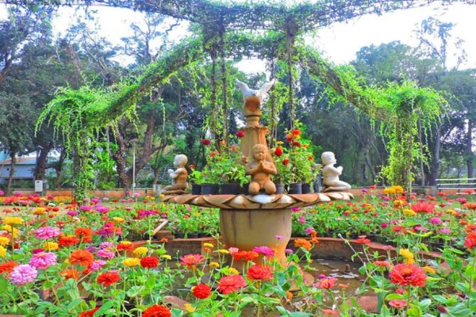
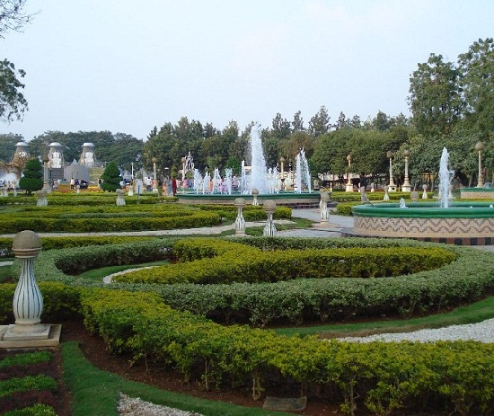
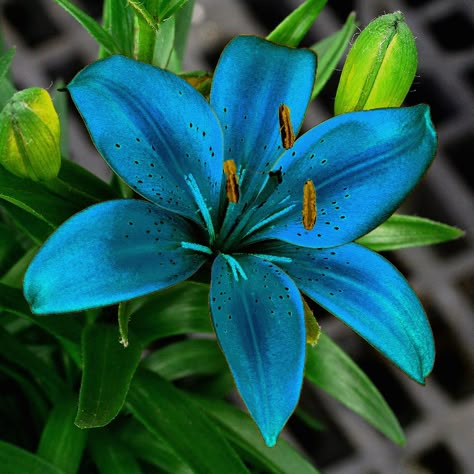
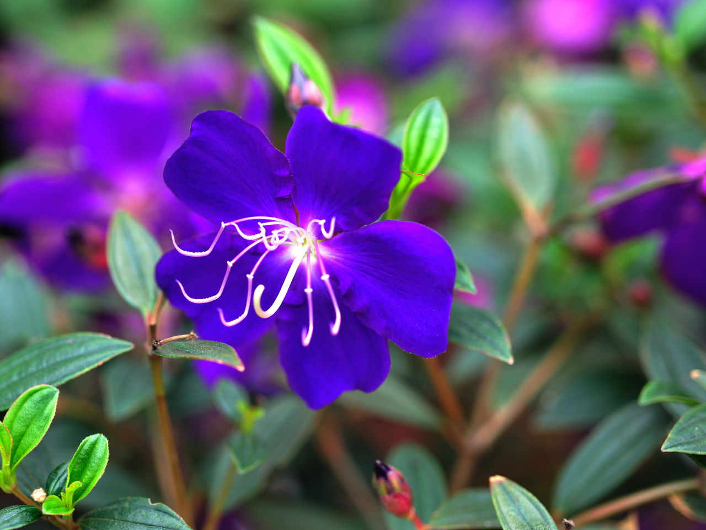
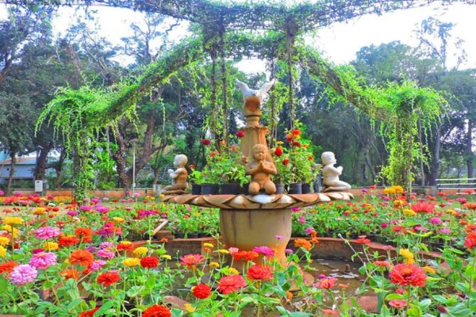
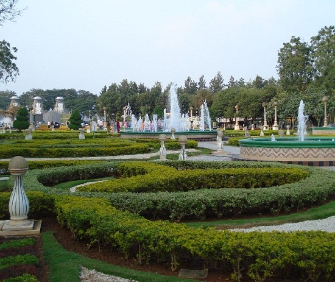
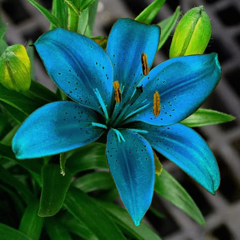
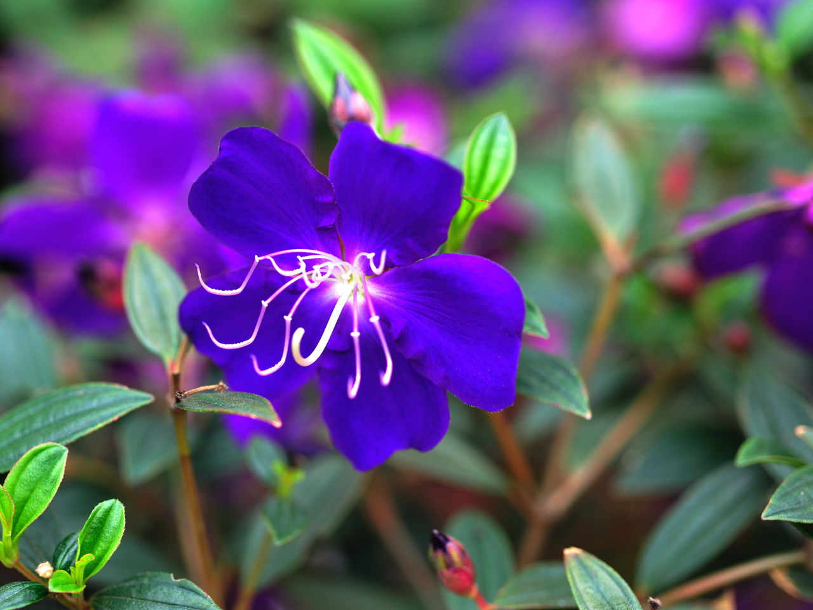
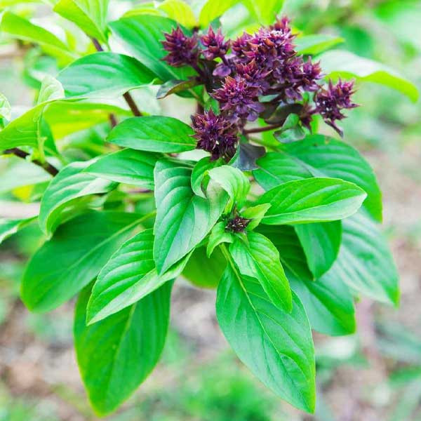
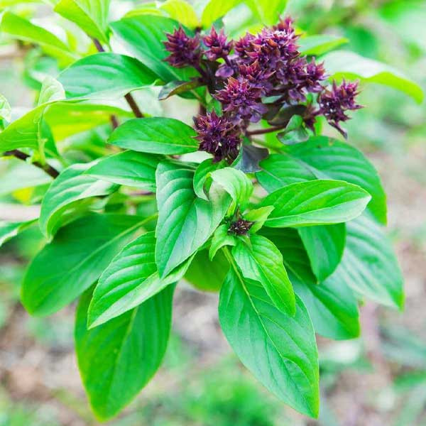

About us
A botanical garden is a carefully curated space where a diverse collection of plant species are cultivated, displayed, and studied for scientific research and education, often featuring labeled plants organized by taxonomic classifications, providing a valuable resource for botanists, students, and the public to learn about plant life from around the world while also contributing to conservation efforts by propagating rare or endangered plant varieties.
The first botanical garden of India was founded in 1787 by an army officer of the East India Company, named Colonel Robert Kyd. The primary purpose of establishing the garden was to identify new plant species, such as teak, which had great economic value and grow them on a commercial scale for trade.
It was then named Royal Botanic Garden, Calcutta. Later, the name was changed to Calcutta Botanical Garden and then to Indian Botanic Garden. On 25th June 2009, the name was finally changed to Acharya Jagadish Chandra Bose Botanic Garden in honour of Acharya Jagadish Chandra Bose, a Bengali botanist-physicist and an early writer of science fiction.
Over 12,000 specimens of rare plants are housed in the garden, which cover 109 hectares. Under the Ministry of Environment and Forests of India, the Botanical Survey of India (BSI) manages the centre.
As botanical gardens house a wide variety of plant species, it is an open, outdoor laboratory for a large number of students and botanists. Such a garden is important because:
It is a place where a variety of endangered flora are conserved.
It helps in taxonomic study and research.
It provides the public with information about local and exotic species of plants.
Rare species and genetic diversity are conserved and propagated in a botanical garden.


 







 
